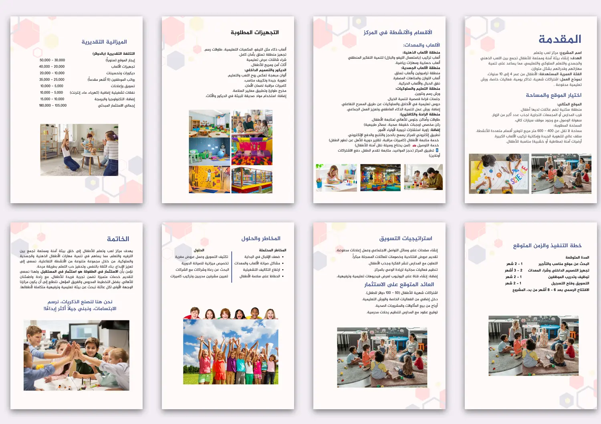
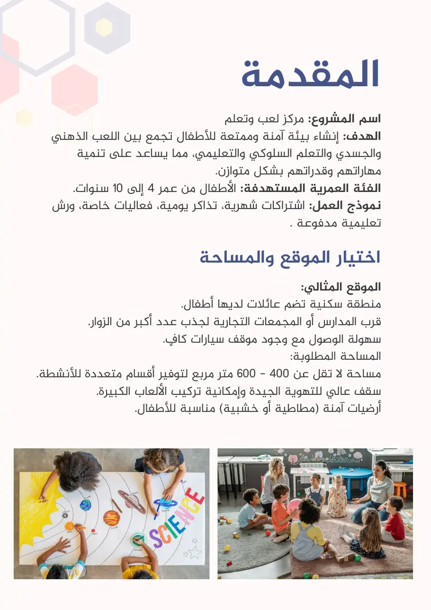
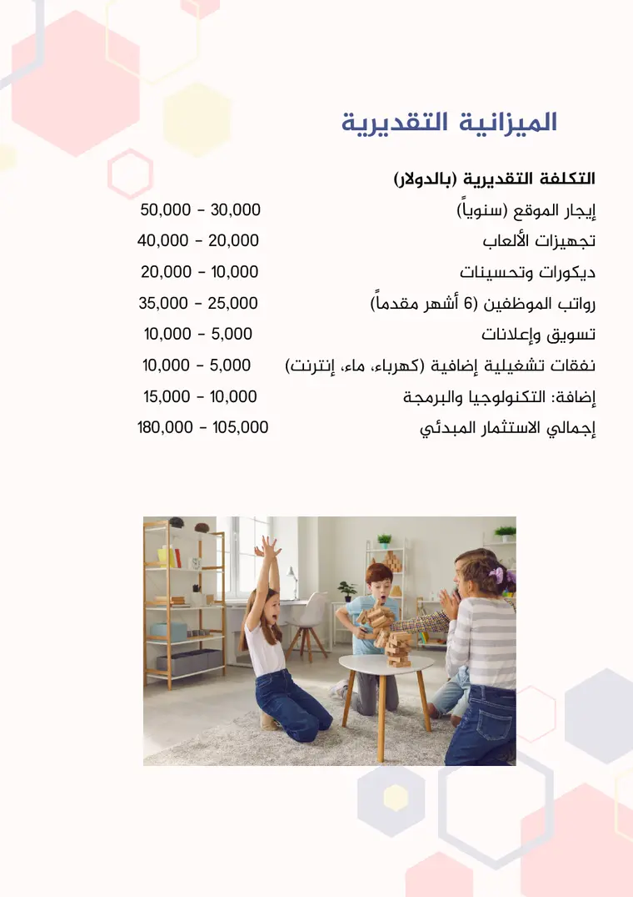

«لعب وتعلّم» فكرة مركز للأطفال من 4 إلى 10 سنوات يجمع اللعب الذهني والجسدي والتعلّم السلوكي. المقترح لازم يقنع قارئًا — شريك أو مموّل — بأن الفكرة مدروسة: شو الأقسام، كم التكلفة، متى الافتتاح، وشو المخاطر.
القرارات
شكل واحد يتكرّر: السداسي يجمع صور الغلاف، ويظهر خفيفًا بألوان باستيل في خلفية كل صفحة، ويرجع في الغلاف الخلفي. القارئ يحس إن الصفحات العشر قطعة واحدة.
قالب صفحة ثابت: عنوان كحلي في الأعلى، ثم النص، ثم صورة أو صورتان في الأسفل. القارئ يعرف وين يلاقي كل شي.
الأرقام في عمودين: الميزانية والخطة الزمنية مرتّبة كبند مقابل رقم، فتنقرأ مثل جدول بدون خطوط جدول.
خط لكل دور: خط عربي مميّز لعنوان الغلاف، وخط لاتيني كلاسيكي للسنة بالأحمر المرجاني، وخط Noto Sans Arabic لنص المقترح.
غلاف خلفي يقفل القصة: شريط كحلي عمودي بالعنوان، بنفس لون العناوين الداخلية.

الصفحات الداخلية، تُقرأ من اليمين.
01المقدمة، واختيار الموقع والمساحة
02الأقسام والأنشطة في المركز
03التجهيزات المطلوبة
04الميزانية التقديرية
05خطة التنفيذ والزمن المتوقع
06استراتيجيات التسويق والعائد المتوقع
07المخاطر والحلول
08الخاتمة

قالب الصفحة: عنوان، نص، صور.

الميزانية: بند مقابل رقم.الخطة الزمنية بنفس الترتيب.
الحدود
هذا مقترح لفكرة مشروع، مش مركز قائم. الأرقام والمدد في الصفحات تقديرات من داخل المقترح، وليست نتائج. اللقطات من ملف التصميم.
عندك فكرة تحتاج عرض مرتّب؟
أرسل الفكرة والمعلومات المتوفرة، وأحوّلها لمستند واضح.